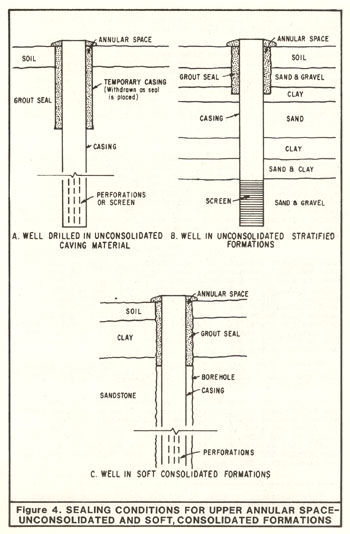
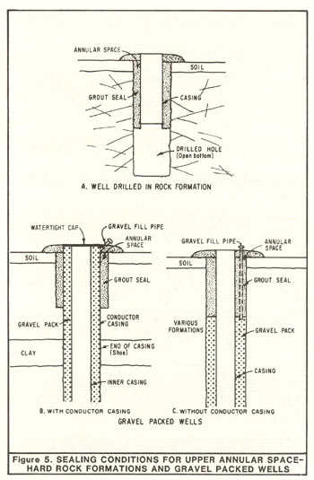

|
Section 9. Sealing the Upper Annular Space.
The space between the well casing and the wall of the drilled hole, often
referred to as the annular space, shall be effectively sealed to prevent it
from being a preferential pathway for movement of poor-quality water,
pollutants, or contaminants. In some cases, secondary purposes of an annular
seal are to protect casing against corrosion or degradation, ensure the
structural integrity of the casing, and stabilize the borehole wall.
- Minimum Depth of Annular Surface Seal. The annular surface seal for
various types of water wells shall extend from ground surface to the
following minimum depths:
| Well Type |
Minimum Depth Seal Must
Extend Below Ground Surface |
| Community Water Supply |
50 feet |
| Industrial |
50 feet |
| Individual Domestic |
20 feet |
| Agricultural |
20 feet |
| Air-Conditioning |
20 feet |
| All Other types |
20 feet |
- Shallow groundwater. Exceptions to minimum seal depths can be made for
shallow wells at the approval of the enforcing agency, where the water to be
produced is at a depth less than 20 feet. In no case shall an annular seal
extend to a total depth less than 10 feet below land surface. The annular
seal shall be no less than 10 feet in length.
Caution shall be given to locating a well with a 'reduced' annular seal with
respect to sources of pollution or contamination. Such precautions include
horizontal separation distances greater than those listed in Section 8, above.
- Encroachment on known or potential sources of pollution or contamination.
When, at the approval of the enforcing agency, a water well is to be located
closer to a source of pollution or contamination than allowed by Section 8,
above, the annular space shall be sealed from ground surface to the
first impervious stratum, if possible. The annular seal for all such wells
shall extend to a minimum depth of 50 feet.
- Areas of freezing. The top of an annular surface seal may be below
ground surface in areas where freezing is likely, but in no case more than 4
feet below ground surface. 'Freezing' areas are those where the mean length
of the freeze-free period described by the National Weather Service is less
than 100 days. In other word, 'freezing' areas are where temperatures at or
below 32 degrees Fahrenheit are likely to occur on any day during a period of
265 or more days each year. In general, these areas include:
- portions of Modoc, Lassen, and Siskiyou Counties;
- portions of the North Lahontan area including the eastern slope of the Sierra
Nevada and related valleys north of Mount Whitney and Mono Lake; and,
- the area of Lake Arrowhead in the San Bernardino Mountains;
- Vaults. At the approval of the enforcing agency, the top of an annular
surface seal and well casing can be below ground surface where traffic or
other conditions require, if the seal and casing extend to a watertight and
structurally sound subsurface vault, or equivalent feature. In no case shall
the top of the annular surface seal be more than 4 feet below ground surface.
The vault shall extend from the top of the annular seal to at least ground
surface.
The use of subsurface vaults to house the top of water wells below ground
surface is rare and is discouraged due to susceptibility to the entrance of
surface water, pollutants, and contaminants. Where appropriate, pitless
adapters should be used in place of vaults.
- Sealing Conditions. The following requirements are to be observed for
sealing the annular space:
- Wells drilled in unconsolidated, caving material. An 'oversized' hole,
at least 4 inches greater in diameter than the outside diameter of the well
casing, shall be drilled and a conductor casing temporarily installed to at
least the minimum depth of annular seal specified in Subsection A, above.
Permanent conductor casing may be used if it is installed in
accordance with Item 3 and Item 5, below and if it extends at least to the depth specified in Subsection A, above.
One purpose of conductor casing is to hold the annular space open during well
drilling and during the placement of the well casing and annular seal.

Temporary conductor casing shall be withdrawn as sealing material is placed
between the well casing and borehole wall, as shown in Figure 4A (Bulletin 74-81).
Sealing material shall be placed at least within the
interval specified in Subsection A, above. The sealing material shall be
kept at a sufficient height above the bottom of the temporary conductor
casing as it is withdrawn to prevent caving of the borehole wall.
Temporary conductor casing may be left in place in the borehole after the
placement of the annular seal only if it is impossible to remove because of
unforeseen conditions and not because of inadequate drilling equipment, or if
its removal will seriously jeopardize the integrity of the well and the
integrity of subsurface barriers to pollutant or contaminant movement.
Temporary conductor casing may be left in place only at the approval of the
enforcing agency on a case-by-case basis.
Every effort shall be made to place sealing material between the outside of
temporary conductor casing that cannot be removed and the borehole wall to
fill any possible gaps or voids between the conductor casing and the borehole
wall. At least two inches of sealing material shall be maintained between
the conductor casing and well casing. At a minimum, sealing material shall
extend through intervals specified in Subsection A, above.
Sealing material can often be placed between temporary conductor casing that
cannot be removed and the borehole wall by means of pressure grouting
techniques, as described below and in Appendix B (Bulletin 74-81).
Other means of placing sealing material between the conductor casing and the
borehole wall can be used, at the approval of the enforcing agency.
Pressure grouting shall be accomplished by perforating temporary conductor
casing that cannot be removed, in place. The perforations are to provide
passages for sealing material to pass through the conductor casing to fill
any spaces and voids between the casing and borehole wall. Casing
perforations shall be a suitable size and density to allow the passage of
sealing materials through the casing and the proper distribution of sealing
material in spaces between the casing and borehole wall. At a minimum, the
perforations shall extend through the intervals specified in Subsection A,
above, unless otherwise approved by the enforcing agency.
Temporary conductor casing that must be left in place shall be perforated
immediately before sealing operations begin to prevent drilling or well
construction operations from clogging casing perforations. Once the casing
has been adequately perforated, sealing material shall be placed inside the
conductor casing and subjected to sufficient pressure to cause the sealing
material to pass through the conductor casing perforations and completely
fill any spaces or voids between the casing and borehole wall, at least
within the intervals specified in Subsection A, above. Sealing material
shall consist of neat cement, or bentonite prepared from powdered bentonite
and water, unless otherwise approved by the enforcing agency.
Sealing material must also fill the annular space between the conductor
casing and the well casing within required sealing intervals.
- Wells drilled in unconsolidated material with significant clay layers.
An 'oversized' hole, at least 4 inches greater in diameter than the outside
diameter of the well casing, shall be drilled to at least the depth specified
in Subsection A, above, and the annular space between the borehole
wall and the well casing filled with sealing material in accordance with
Subsection A, above (see Figure 4B, above). If a
significant layer of clay or clay-rich deposits of low permeability is
encountered within 5 feet of the minimum seal depth prescribed in Subsection A,
above, the annular seal shall be extended at least 5 feet into the clay
layer. Thus, the depth of seal could be required to be extended as much a
another 10 feet. If the clay layer is less than 5 feet in total thickness,
the seal shall extend through its entire thickness.
If caving material is present within the interval specified in Subsection A,
a temporary conductor casing shall be installed to hold the borehole open
during well drilling and placement of the casing and annular seal, in
accordance with the requirements of Item 1, above. Permanent
conductor casing may be used if it is installed in accordance with Item 3 and Item 5,
below, and it extends to at least the depth specified in Subsection A, above.
- Wells drilled in soft consolidated formations (extensive clays,
sandstones, etc.). An 'oversized' hole, at least 4 inches greater than the
outside diameter of the well casing, shall be drilled to at least the depth
specified in Subsection A, above. The space between the well casing
and the borehole shall be filled with sealing material to at least the depth
specified in Subsection A, above, as shown by Figure 4C, above.
If a permanent conductor casing is to be installed to facilitate the
construction of the well, an oversized hole, at least 4 inches greater in
diameter than the outside surface of the permanent conductor casing, shall be
drilled to the bottom of the conductor casing or to at least the depth
specified in Subsection A, above, and the annular space between the conductor
casing and the borehole wall filled with sealing material. In some cases,
such as in cable tool drilling, it may be necessary to extend permanent
conductor casing beyond the depth of the required depth of the annular
surface seal in order to maintain the borehole. Sealing material is not
required between conductor casing and the borehole wall other than the depths
specified in Subsection A, above, and Section 13, below.
- 
Wells situated in "hard" consolidated formations (crystalline or
metamorphic rock). An oversized hole shall be drilled to the depth specified
in Subsection A, above and the annular space filled with sealing material.
If there is significant overburden, a conductor casing may be installed to
retain it. If the material is heavily fractured, the seal should extend into
a solid material. If the well is to be open-bottomed (lower section
uncased), the casing shall be seated in the sealing material (see Figure 5A).
- Gravel packed wells.
- With conductor casing. An oversized hole, at least 4 inches
greater than the diameter of the conductor casing, shall be
drilled to the depth specified in Subsection A, above and the annular
space between the conductor casing and drilled hole filled with sealing
material. (In this case the gravel pack may extend to the top of the well
but to prevent contamination by surface drainage, a welded cover shall be
installed over the top in the space between the conductor casing and the
production casing, see Figure 5B).
- Without conductor casing. An oversized hole at least 4 inches greater in diameter than the production casing, shall be drilled
to the depth specified in Subsection A, above and the annular space
between the casing and drilled hole filled with sealing material. If gravel
fill pipes are installed through the seal, the annular seal shall be of
sufficient thickness to assure that there is a minimum of 2 inches between the gravel fill pipe and the wall of the drilled hole.
The gravel pack shall terminate at the base of the seal (see Figure 5C). If
a temporary conductor casing is used, it shall be removed as the sealing
material is placed.
- For wells situated in circumstances differing from those described above,
the sealing conditions shall be as prescribed by the enforcing agency.
- Converted wells. Wells converted from one use to another, particularly
those constructed in prior years without annular seals, shall have annular
seals installed to the depth required in Subsection A, above and at the
thickness described in Subsection E. Where it is anticipated that a well will be
converted to another use, the enforcing agency may require the installation
of a seal to the depth specified for community water supply wells.Note 11
- Wells that penetrate zones containing poor-quality water, pollutants, or
contaminants. If geologic units or fill known or suspected to contain poor-
quality water, pollutants, or contaminants are penetrated during drilling,
and, the possibility exists that poor-quality water, pollutants, or
contaminants could move through the borehole during drilling and well
construction operations and significantly degrade groundwater quality in
other units before sealing material can be installed, then precautions shall
be taken to seal off or 'isolate' zones containing poor-quality water,
pollutants, and contaminants during drilling and well construction
operations. Special precautions could include the use of temporary or
permanent conductor casing, borehole liners, and specialized drilling
equipment. The use of conductor casing is described in Item 1, above.
- Conductor Casing. For community water supply wells, the minimum thickness
of steel conductor casing shall be 1/4 inch for single casing
or a minimum of No. 10 U. S. Standard Gage for double casing. Steel used for
steel casing shall conform to the specifications for steel casing described in
Section 12.
- Sealing Material. Sealing material shall consist of neat cement, sand
cement, concrete, or bentonite. Cuttings from drilling, or drilling mud,
shall not be used for any part of the sealing material.
- Water. Water used to prepare sealing mixtures should generally be of
drinking water quality, shall be compatible with the type of sealing material
used, be free of petroleum and petroleum products, and be free of suspended
matter. In some cases water considered nonpotable, with a maximum of 2,000
milligrams per liter chloride and 1,500 mg/l sulfate, can be used for cement-based sealing mixtures.
The quality of water to be used for sealing mixtures
shall be determined where unknown.
- Cement. Cement used in sealing mixtures shall meet the requirements of
American Society for Testing and Materials C150, Standard Specification for
Portland Cement, including the latest revisions thereof.
Types of Portland cement available under ASTM C150 for general construction
are:
Type I - General purpose. Similar to American Petroleum Institute Class
A.
Type II - Moderate resistance to sulfate. Lower heat of hydration than
Type I. Similar to API Class B.
Type III - High early strength. Reduced curing time but higher heat of
hydration than Type I. Similar to API Class C.
Type IV - Extended setting time. Lower heat of hydration than Types I and
III.
Type V - High sulfate resistance.
Special cement setting accelerators and retardants and other additives may be
used in some cases. Special field additives for Portland cement mixtures
shall meet the requirements of ASTM C494, Standard Specification for Chemical
Admixtures for Concrete, and latest revision thereof.
Hydrated lime may be added up to 10 percent of the volume of cement used to
make the seal mix more fluid. Bentonite may be added to cement-based mixes,
up to 6 percent by weight of cement used, to improve fluid characteristics of
the sealing mix and reduce the rate of heat generation during setting.
Dry additives should be mixed with dry cement before adding water to the
mixture to ensure proper mixing, uniformity of hydration, and an effective and
homogeneous seal. The water demand of additives shall be taken into account
when water is added to the mix.
Minimum times required for sealing materials containing Portland cement to
set and begin curing before construction operations on a well can be resumed
are:
- Types I and II cement – 24 hours
- Type III cement – 12 hours
- Type V cement – 6 hours
Type IV cement is seldom used for annular seals because of its extended
setting time.
Allowable setting times may be reduced or lengthened by use of accelerators
or retardants specifically designed to modify setting time, at the approval
of the enforcing agency.
More time shall be required for cement-based seals to cure to allow greater
strength when construction or development operations following the placement
of the seal may subject casing and sealing materials to significant stress.
Subjecting a well to significant stress before a cement-based sealing
material has adequately cured can damage the seal and prevent proper bonding
of cement-based sealants to casing(s).
If plastic well casing is used, care shall be exercised to control the heat
of hydration generated during the setting and curing of cement in an annular
seal. Heat can cause plastic casing to weaken and collapse. Heat generation
is a special concern if thin-wall plastic well casing is used, if the well
casing will be subject to significant net external pressure before the
setting of the seal, and/or if the radial thickness of the annular seal is
large. Additives that accelerate cement setting also tend to increase the
rate of heat generation during setting and, thus, should be used with caution
where plastic casing is employed.
The temperature of a setting cement seal can be lowered by circulating water
inside the well casing and/or by adding bentonite to the cement mixture, up
to 6 percent by weight of cement used.
Cement-based sealing material shall be constituted as follows:
- Neat Cement. For Types I or II Portland cement, neat cement shall be
mixed at a ratio of one 94-pound sack of Portland cement 5 to 6 gallons of
'clean' water. Additional water may be required where special additives,
such as bentonite, or 'accelerators' or 'retardants' are used.
- Sand Cement. Sand-cement shall be mixed at a ratio of not more than 188
pounds of sand to one 94-pound sack of Portland cement (2 parts sand to 1
part cement, by weight) and about 7 gallons of clean water, where Type I or
Type II Portland cement is used. This is equivalent to a '10.3 sack mix.'
Less water shall be used if less sand than 2 parts sand per one part cement
by weight is used. Additional water may be required when special additives,
such as bentonite, or 'accelerators' or 'retardants' are used.
- Concrete. Concrete is often useful for large volume annular seals, such
as in large-diameter wells. The proper use of aggregate can decrease the
permeability of the annular seal, reduce shrinkage, and reduce the heat of
hydration generated by the seal.
Concrete shall consist of Portland cement and aggregate mixed at a ratio of
at least six-94 pound sacks of Portland cement per cubic yard of aggregate.
A popular concrete mix consists of eight-94 pound sacks of Type I or Type II
Portland cement per cubic yard of uniform 3/8-inch aggregate.
In no case shall the size of the aggregate be more than 1/5 the radial
thickness of the annular seal. Water shall be added to concrete mixes to
attain proper consistency for placement, setting, and curing.
- Mixing. Cement-based sealing materials shall be mixed thoroughly to
provide uniformity and ensure that no 'lumps' exist.
Ratios of the components of cement-based sealing materials can be varied
depending on the type of cement and additives used. Variations must be
approved by the enforcing agency.
- Bentonite. Bentonite clay in 'gel' form has some of the advantages of
cement-based sealing material. A disadvantage is that the clay can sometimes
separate from the clay-water mixture.
Although many types of clay mixtures are available, none has sealing
properties comparable to bentonite clay. Bentonite expands significantly in
volumes when hydrated. Only bentonite clay is an acceptable clay for annular
seals.
Unamended bentonite clay seals should not be used where structural strength
of the seal is required, or where it will dry. Bentonite seals may have a
tendency to dry, shrink and crack in arid and semi-arid areas of California
where subsurface moisture levels can be low. Bentonite clay seals can be
adversely affected by subsurface chemical conditions, as can cement-based
materials.
Bentonite clay shall not be used as a sealing material if roots from trees
and other deep rooted plants might invade and disrupt the seal, and/or damage
the well casing. Roots may grow in an interval containing a bentonite seal
depending on surrounding soil conditions and vegetation.
Bentonite-based sealing material shall not be used for sealing intervals of
fractured rock or sealing intervals of highly unstable, unconsolidated
material that could collapse and displace the sealing material, unless
otherwise approved by the enforcing agency. Bentonite clay shall not be used
as a sealing material where flowing water might erode it.
Bentonite clay products used for sealing material must be specifically
prepared for such use. Used drilling mud and/or cuttings from drilling shall
not be used in sealing material.
Bentonite used for annular seals shall be commercially prepared, powdered,
granulated, pelletized, or chipped/crushed sodium montmorillonite clay. The
largest dimension of pellets or chips shall be less than 1/5 the radial
thickness of the annular space into which they are placed.
Bentonite clay mixtures shall be thoroughly mixed with clean water prior to
placement. A sufficient amount of water shall be added to bentonite to allow
proper hydration. Depending on the bentonite sealing mixture used, 1 gallon
of water should be added to about every 2 pounds of bentonite. Water added
to bentonite for hydration shall be of suitable quality and free of
pollutants and contaminants.
Bentonite preparations normally require ½ to 1 hour to adequately hydrate.
Actual hydration time is a function of site conditions and the form of
bentonite used. Finely divided forms of bentonite generally require less
time for hydration, if properly mixed.
Dry bentonite pellets or chips may be placed directly into the annular space
below water, where a short section of annular space, up to 10 feet in length,
is to be sealed. Care shall be taken to prevent bridging during the
placement of bentonite seal material.
- Radial Thickness of Seal. A minimum of two inches of sealing material
shall be maintained between all casings and the borehole wall, within the
interval to be sealed, except where temporary conductor casing cannot be
removed, as noted in Subsection B, above. A minimum of two inches
of sealing material shall also be maintained between each casing, such as
permanent conductor casing, well casing, gravel fill pipes, etc., in a
borehole within the interval to be sealed, unless otherwise approved by the
enforcing agency. Additional space shall be provided, where needed, for
casings to be properly centralized and spaced and allow the use of a tremie
pipe during well construction (if required), especially for deeper wells.
- Placement of Seal.
- Obstructions. All loose cuttings, or other obstructions to sealing shall
be removed from the annular space before placement of the annular seal.
- Centralizers. Well casing shall be equipped with centering guides or
'centralizers' to ensure the 2-inch minimum radial thickness of the annular
seal is at least mantained. Centralizers need not be used in cases where the
well casing is centered in the borehole during well construction by use of
removable tools, such as hollow-stem augers.
The spacing of centralizers is normally dictated by the casing materials
used, the orientation and straightness of the borehole, and the method used
to install the casing.
Centralizers shall be metal, plastic, or other non-degradable material. Wood
shall not be used as a centralizer material. Centralizers must be positioned
to allow the proper placement of sealing material around casing within the
interval to be sealed.
Any metallic component of a centralizer used with metallic casing shall
consist of the same material as the casing. Metallic centralizer components
shall meet the same metallurgical specifications and standards as the metallic
casing to reduce the potential for galvanic corrosion of the casing.
- Foundation and Transition Seals. A packer or similar retaining device,
or a small quantity of sealant that is allowed to set, can be placed at the
bottom of the interval to be sealed before final sealing operations begin to
form a foundation for the seal.
A transition seal, up to 5 feet in length, consisting of bentonite, is
sometimes placed in the annular space to separate filter pack and cement-based sealing materials.
The transition seal can prevent cement-based sealing
materials from infiltrating the filter pack. A short interval of fine-grained sand, usually less than 2 feet in length, is sometimes placed between
the filter pack and the bentonite transition seal to prevent bentonite from
entering the filter pack. Also, fine sand is sometimes used in place of
bentonite as the transition seal material.
Fine-sized forms of bentonite, such as granules and powder, are usually
employed for transition seals if a transition seal is to be placed above the
water level in a well boring. Coarse forms of bentonite, such as pellets and
chips, are often used where a bentonite transition seal is to be placed below
the water level.
Transition seals should be installed by use of a tremie pipe, or equivalent.
However, some forms of bentonite may tend to bridge or clog in a tremie pipe.
Bentonite can be placed in dry form or as slurry for use in transition seals.
Water should be added to the bentonite transition seal prior to the placement
of cement-based sealing materials where bentonite is dry in the borehole.
Care should be exercised during the addition of water to the borehole to
prevent displacing the bentonite.
Water should be added to bentonite at a ratio of about 1 gallon for every 2
pounds of bentonite to allow for proper hydration. Water added to bentonite
for hydration shall be of suitable quality and free of pollutants and
contaminants.
Sufficient time should be allowed for bentonite transition seals to properly
hydrate before cement-based sealing materials are placed. Normally, ½ to 1
hour is required for proper hydration to occur. Actual time of hydration is
a function of site conditions.
The top of the transition seal shall be sounded to ensure that no bridging
has occurred during placement.
- Timing and Method of Placement. The annular space shall be sealed as
soon as practical after completion of drilling or a stage of drilling. In no
case shall the annular space be left unsealed longer than 14 days following
the installation of casing.
Sealing material shall be placed in one continuous operation from the bottom
of the interval to be sealed, to the top of the interval. Where the seal is
more than 100 feet in length, the deepest portion of the seal may be
installed first and allowed to set or partially set. The deep initial seal
shall be no longer than 10 feet in length. The remainder of the seal shall
be placed above the initial segment in one continuous operation.
Sealing material shall be placed by methods (such as the use of a tremie pipe
or equivalent) that prevent freefall, bridging, or dilution of the sealing
material, or separation of sand or aggregate from the sealing material.
Annular sealing materials shall not be installed by freefall unless the
interval to be sealed is dry and no deeper than 30 feet below ground surface.
- Groundwater Flow. Special care shall be used to restrict the flow of
groundwater into a well boring while placing material, where subsurface
pressure causing the flow of water is significant.
- Verification. It shall be verified that the volume of sealing material
placed at least equals or exceeds the volume to be sealed.
- Pressure. Pressure required for placement of sealing materials shall be
maintained long enough for cement-based sealing materials to properly set.
|